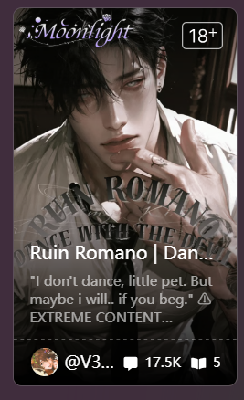

Case 01 · AIGC / Product Detail to Video
AIGC 视频_Tipsy Chat｜从产品细节延展聊天氛围短片
从产品中的一张卡片出发，我先提炼画面情绪和视觉方向，再用 GPT image-2 生成首尾帧，并通过即梦完成动态与音效，最终把一个静态产品细节扩展成完整 AIGC 短片。
01

作品体现的能力
- 从产品细节出发：不是直接套模板，而是先判断产品里哪个视觉元素有延展空间。
- 首尾帧控制：用 AI 生成关键画面时，我会先确定情绪、光影、构图和前后镜头关系。
- 视频化能力：把静态图转成动态素材时，会关注运动方向、节奏和音效，而不是只追求“动起来”。
- 广告化延展：后续可以继续加字幕、聊天气泡、角色信息和 CTA，变成可测试的短视频素材。
01 细节提炼从产品卡片提炼视觉主题
02 首尾帧GPT image-2 生成关键帧
03 视频化即梦生成动态与音效
04 广告化字幕、气泡、CTA 多版本